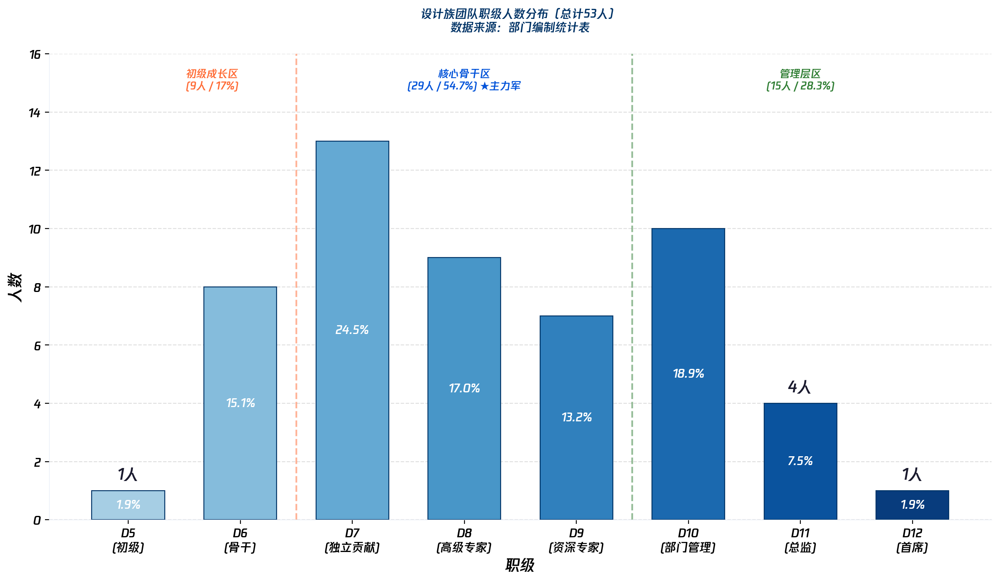
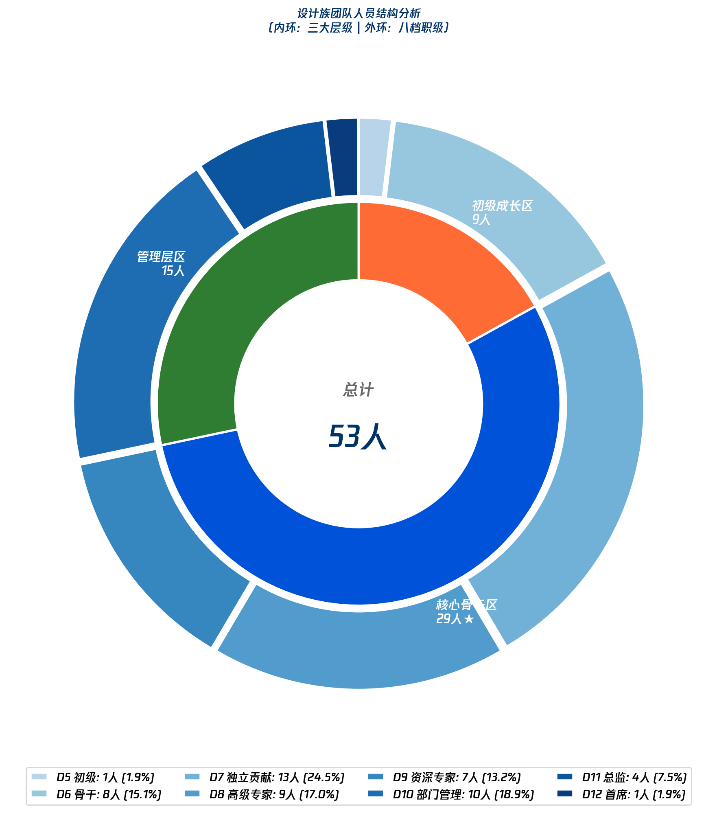
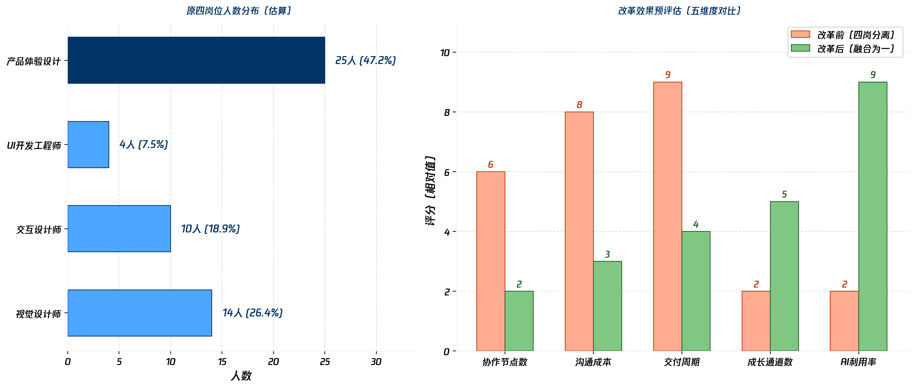
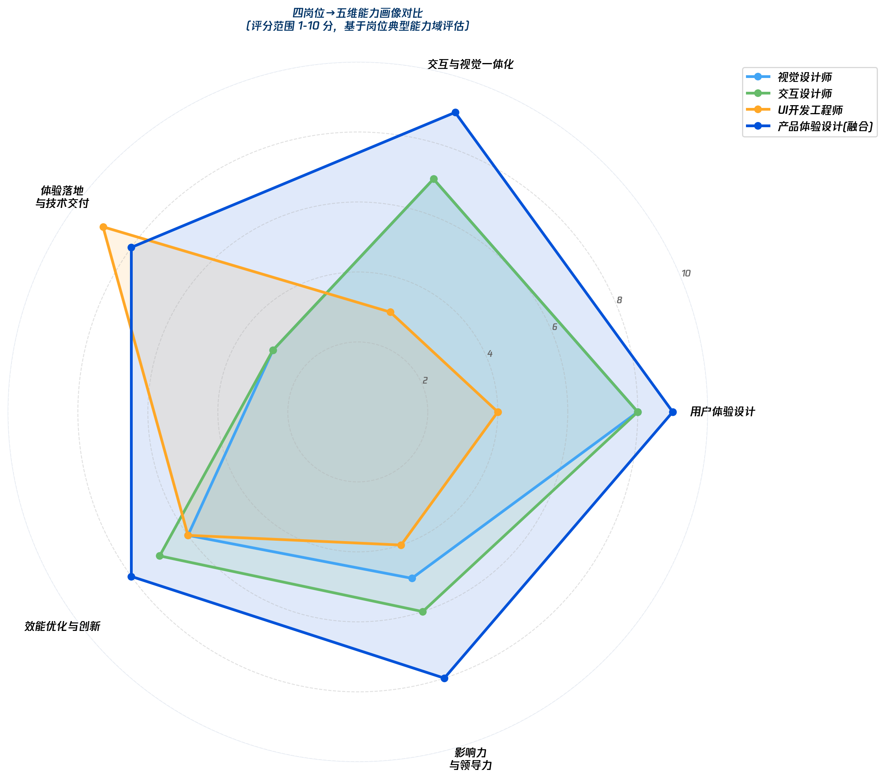
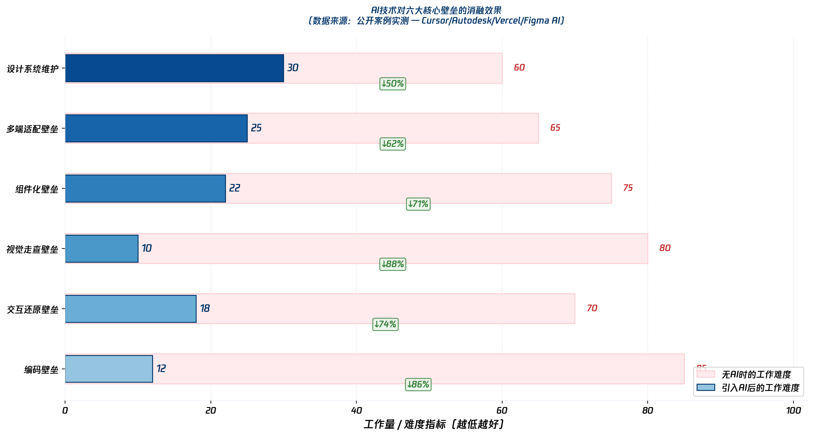
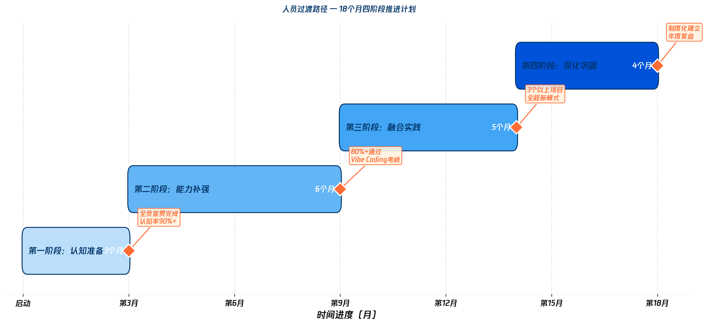
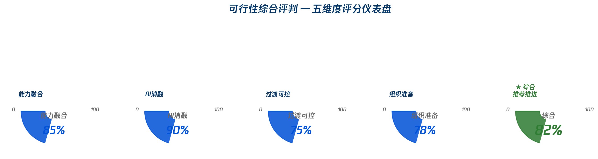

基于部门编制统计表（工作簿1.xlsx）的53人真实数据分析，配合公开可验证的AI工具案例
工作簿1.xlsx」Sheet2员工明细 + Sheet1统计分析 |
所有人数均为实际统计值，无估算或虚构 | 图表生成时间：2026年4月27日

展示53人按D5-D12的完整分布。三阶段区域划分：
初级成长区 D5-D6 (9人/17%)
核心骨干区 D7-D9 (29人/54.7%) ★主力军
管理层区 D10-D12 (15人/28.3%)

双层环形图：内环展示三大层级聚合（初级/骨干/管理层），外环展示八档职级详细占比

左图：原始四岗位的人数估算与占比 | 右图：改革前vs改革后在五个维度的评分对比

四种岗位在五维能力模型上的得分对比。产品体验设计（融合后）在各维度均表现均衡。

基于Cursor/Autodesk Percy/Vercel v0/Figma AI等公开案例的实测数据。
编码壁垒和视觉走查壁垒的消融效果最为显著（↓86% 和 ↓88%）

